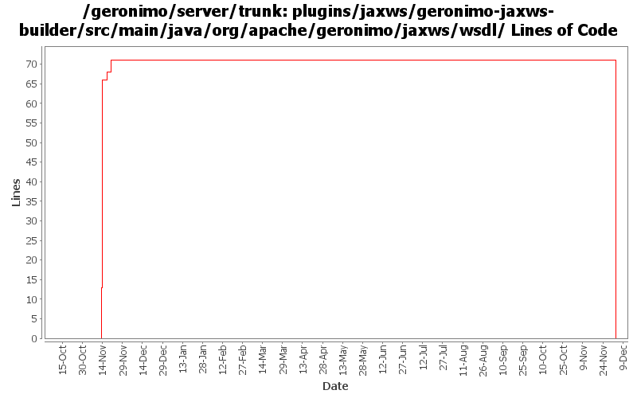

[root]/plugins/jaxws/geronimo-jaxws-builder/src/main/java/org/apache/geronimo/jaxws/wsdl

| Author | Changes | Lines of Code | Lines per Change |
|---|---|---|---|
| Totals | 10 (100.0%) | 170 (100.0%) | 17.0 |
| gawor | 6 (60.0%) | 99 (58.2%) | 16.5 |
| rickmcguire | 1 (10.0%) | 71 (41.8%) | 71.0 |
| xuhaihong | 3 (30.0%) | 0 (0.0%) | 0.0 |
GERONIMO-4967 Enable Axis2 plugin in Geronimo 3.0
1. Rename some packages to avoid the exporting conflict
2. Use those bundlized dependency
0 lines of code changed in 3 files:
More plugin cleanup
71 lines of code changed in 1 file:
use slightly different way of finding the generated wsdl file (part of GERONIMO-4351)
22 lines of code changed in 1 file:
some minor updates related to GERONIMO-4351
2 lines of code changed in 1 file:
refactor some more wsgen related code (part of GERONIMO-4351)
62 lines of code changed in 1 file:
factor out some utility methods from wsgen code (part of GERONIMO-4351)
13 lines of code changed in 1 file:
refactor wsgen functionality into a separate plugin (part of GERONIMO-4351)
0 lines of code changed in 2 files: